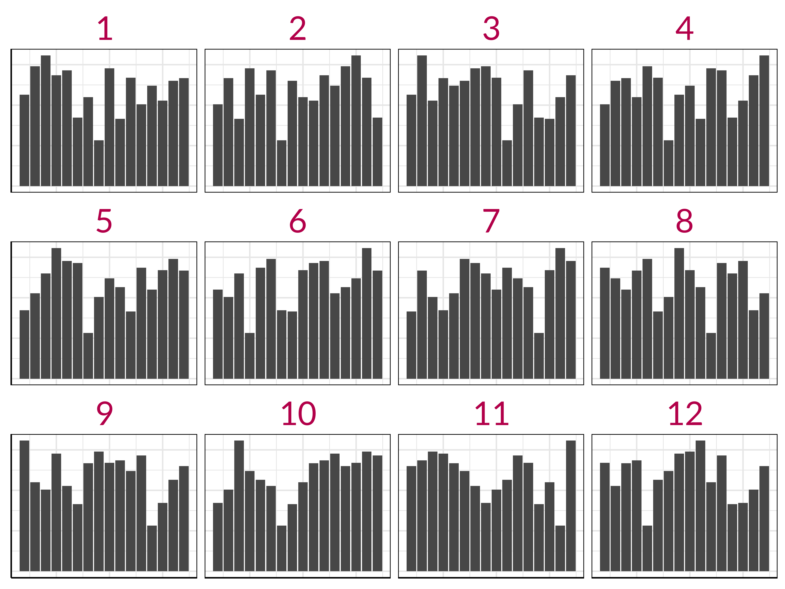

The workflow of tidy data, constructing plots and making data-driven decisions
Professor Di Cook
Monash University
Hello
Hi! 👋 I’m Di!
It’s wonderful to be see everyone in-person, and also glad that many more of you can join online.
What we’ll be doing today is downloading a data set from the web, tidying it, making plots, and making inference.
You’ll need these packages/collections installed: tidyverse, nullabor.
And a copy of all the materials from today at https://github.com/dicook/RLadies-Melbourne-2022.
Download the data
Download a copy of the tuberculosis case notifications data from WHO.
Or you can find this data TB_notifications_2022-08-31.csv in the data directory of the materials for today.
Read data into R
#> Rows: 8,707
#> Columns: 23
#> $ country <chr> "Afghanistan", "Afghan…
#> $ iso3 <chr> "AFG", "AFG", "AFG", "…
#> $ year <dbl> 1980, 1981, 1982, 1983…
#> $ new_sp_m04 <dbl> NA, NA, NA, NA, NA, NA…
#> $ new_sp_m514 <dbl> NA, NA, NA, NA, NA, NA…
#> $ new_sp_m014 <dbl> NA, NA, NA, NA, NA, NA…
#> $ new_sp_m1524 <dbl> NA, NA, NA, NA, NA, NA…
#> $ new_sp_m2534 <dbl> NA, NA, NA, NA, NA, NA…
#> $ new_sp_m3544 <dbl> NA, NA, NA, NA, NA, NA…
#> $ new_sp_m4554 <dbl> NA, NA, NA, NA, NA, NA…
#> $ new_sp_m5564 <dbl> NA, NA, NA, NA, NA, NA…
#> $ new_sp_m65 <dbl> NA, NA, NA, NA, NA, NA…
#> $ new_sp_mu <dbl> NA, NA, NA, NA, NA, NA…
#> $ new_sp_f04 <dbl> NA, NA, NA, NA, NA, NA…
#> $ new_sp_f514 <dbl> NA, NA, NA, NA, NA, NA…
#> $ new_sp_f014 <dbl> NA, NA, NA, NA, NA, NA…
#> $ new_sp_f1524 <dbl> NA, NA, NA, NA, NA, NA…
#> $ new_sp_f2534 <dbl> NA, NA, NA, NA, NA, NA…
#> $ new_sp_f3544 <dbl> NA, NA, NA, NA, NA, NA…
#> $ new_sp_f4554 <dbl> NA, NA, NA, NA, NA, NA…
#> $ new_sp_f5564 <dbl> NA, NA, NA, NA, NA, NA…
#> $ new_sp_f65 <dbl> NA, NA, NA, NA, NA, NA…
#> $ new_sp_fu <dbl> NA, NA, NA, NA, NA, NA…- Is the data in tidy form?
- No, variables are mixed in columns
- What are the variables in the data?
- country, iso3, sex, age
Wrangle into tidy form
tb_tidy <- tb %>%
dplyr::select(country, iso3, year,
new_sp_m04:new_sp_fu) %>%
pivot_longer(cols=contains("new_sp"),
names_to="stuff",
values_to="count") %>%
separate(stuff, c("stuff1",
"stuff2",
"sexage")) %>%
dplyr::select(-stuff1, -stuff2) %>%
mutate(sex=substr(sexage, 1, 1),
age=substr(sexage, 2, length(sexage))) %>%
dplyr::select(-sexage) %>%
select(country, iso3, year, sex, age, count) %>%
dplyr::filter(country == "Australia")
glimpse(tb_tidy)#> Rows: 820
#> Columns: 6
#> $ country <chr> "Australia", "Australia", "…
#> $ iso3 <chr> "AUS", "AUS", "AUS", "AUS",…
#> $ year <dbl> 1980, 1980, 1980, 1980, 198…
#> $ sex <chr> "m", "m", "m", "m", "m", "m…
#> $ age <chr> "04", "514", "014", "1524",…
#> $ count <dbl> NA, NA, NA, NA, NA, NA, NA,…Data is now clearly tidy form. Variables are country, iso3, year, sex, age.
Focusing only on Australia, what would we like to know?
- Is there an increasing or decreasing trend?
- Is there a difference by age?
- Is there a difference by sex?
- Is there a difference by age and sex?
- Is the trend different by age?
- Is the trend different by sex?
- Is the trend different by age and sex?
What plots to make?
- Is there an increasing or decreasing trend?
- Is there a difference by age?
- Is there a difference by sex?
- Is there a difference by age and sex?
- Is the trend different by age?
- Is the trend different by sex?
- Is the trend different by age and sex?
What type of plot would we make to investigate Q1?
What type of plot would we make to investigate Q6?
A little more cleaning
- Change in recording method after 2012
- Difference in recording for age under 15
- Nicer labels for age category
Making inference with data plots
If the data plot looks different from plots generated with a process that ensure there is no REAL pattern, then it is unlikely to have been generated by that process.
For the question: Is there an increasing or decreasing trend?
What would the pattern be if there was nothing there (null hypothesis)?
What would be a possible null generator?
Make the plot, as a lineup
library(nullabor)
tb_tidy_yr <- tb_tidy %>%
group_by(year) %>%
summarise(count = sum(count))
tb_lineup_1 <- ggplot(
lineup(null_permute("count"),
tb_tidy_yr, n=12),
aes(x=year, y=count)) +
geom_col() +
facet_wrap(~.sample) +
theme(strip.text=element_text(size=24, colour = "#C2185B"),
axis.text = element_blank(),
axis.title = element_blank())#> decrypt("wvLp U5E5 Ha es9HEHsa YF")What does this do?
This embeds the data plot into a matrix of null plots. Which allows one to assess whether any structure in the plot might just due to sample variation.
Note the decrypt - position is encrypted so we don’t know which plot is the data, and which are nulls.
Which plot is the most different?
Go to www.mentimeter.com and enter code 2281 4390
Compute statistical significance
- This computes the probability that \(x\) (or more) observers our of \(K\) chose the data plot from the lineup, assuming that there really is no pattern/trend.
- Now let’s unpack the reasons for your choices. What was the pattern that drew you your choice of plot?
Let’s do one more
For the question: Is the trend different by sex?
What would the pattern be if there was nothing there (null hypothesis)?
How would you generate null plots?
Are each of these plots testing the same pattern?
Generating nulls: plot type 1
- Note that year is randomised within each sex.
- This code block would be re-run to generate \((m-1)\) null data sets.
And data is summarised as follows:
Which plot has the most trend?

Generating nulls: plot type 2
- Compute the proportion of females for each year
- Average the proportions across year. If there is no trend in proportion, then the (true) proportion will be the same for all years.
- Simulate from a binomial using this proportion, the same number of observations each year.
Generating nulls: plot type 2
prop_f <- tb_tidy %>%
group_by(year, sex) %>%
summarise(count = sum(count)) %>%
pivot_wider(names_from = "sex", values_from = count) %>%
mutate(p = f/(f+m)) %>%
ungroup() %>%
summarise(p = mean(p)) %>%
pull()
prop_f#> [1] 0.383Generate null data with
tb_yr_sex_null <- tb_tidy %>%
group_by(year) %>%
summarise(count = sum(count)) %>%
mutate(f = 0, m = 0)
for (i in 1:length(tb_yr_sex_null$year)) {
new_sex <- rbinom(tb_yr_sex_null$count[i], 1, prop_f)
tb_yr_sex_null$f[i] <- sum(new_sex)
tb_yr_sex_null$m[i] <- length(new_sex) - sum(new_sex)
}
tb_yr_sex_null <- tb_yr_sex_null %>%
dplyr::select(-count) %>%
pivot_longer(cols = c("f", "m"), names_to="sex", values_to="count")Which plot has the most trend?

Summary
- Putting your data into tidy form, connects it better with statistical thinking
- It makes is easier to make effective data plots, and test their effectiveness
- Using the lineup approach allows one to determine if the pattern is real, or spurious.
Package to use for generating the lineups is nullabor.
Further reading
Wickham et al (2010) Graphical Inference for Infovis
Hofmann et al (2012) Graphical Tests for Power Comparison
Acknowledgements
Slides produced using quarto.
Slides available from https://github.com/dicook/RLadies_Melbourne_2022.
Viewable at https://dicook.github.io/RLadies_Melbourne_2022/slides.html)).